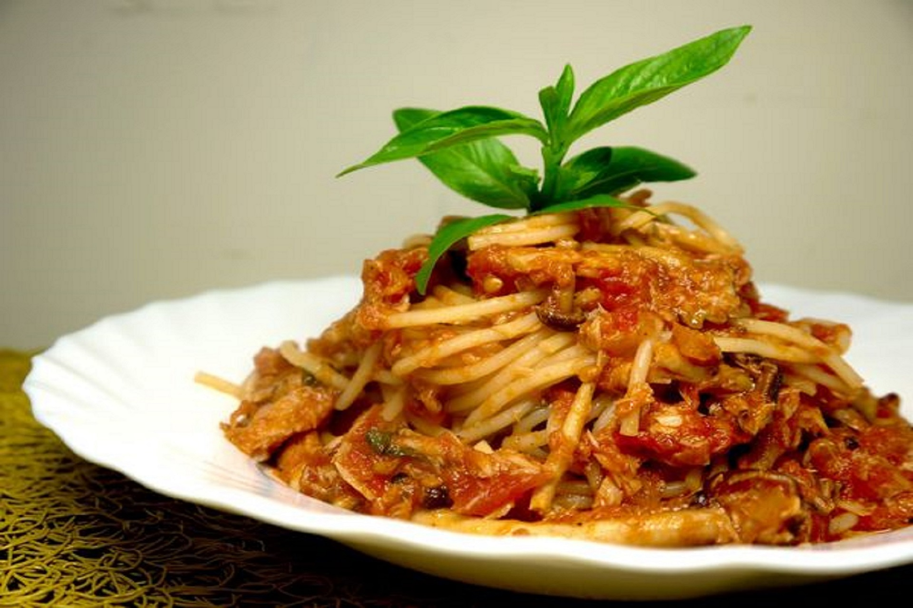

目錄
回首頁
中式料理
日式料理
義式料理
甜點
學而食習之
美食。分享。動手做
學而食習之
美食。分享。動手做
學而食習之
美食。分享。動手做
學而食習之
美食。分享。動手做
學而食習之
美食。分享
當前頁面:義式料理
回首頁

茄汁蘑菇義大利麵
我要學!
Close
食材:
1.義大利麵
2.洋蔥一顆
3.洋菇一盒
4.蒜頭三顆
5.黑胡椒一小匙
6.鹽、紅醬、起司粉少許
步驟:
1.義大利麵放入滾水，煮至約8分軟取出
2.鍋裡放一匙油，放入洋蔥，洋菇拌炒至金黃色，取出備用
3.鍋裡放一匙油，把蒜片跟紅醬拌炒出香氣
4.將洋蔥、洋菇、加入鍋裡混合，混合拌炒均勻，加入黑胡椒，鹽調味
5.把麵條放入醬中拌炒均勻，撒上起司粉，就可以享用美味餐點囉！
留言區：
牛肉蔬菜湯
我要學!
Close
食材:
1.牛肉300-400g
2.高麗菜半顆
3.紅蘿蔔1條
4.鮮香菇2片
5.馬鈴薯1顆
6.芹菜2-3支
7.蒜頭、洋蔥少許
步驟:
1.洋蔥、紅蘿蔔、高麗菜切好備用。
2.牛肉切塊，加熱至無血水
3.起油鍋，爆香蒜末後接著下洋蔥片、鮮香菇片、紅蘿蔔塊炒香
4.加入高麗菜片與燙過的牛肉塊、番茄塊
5.以黑胡椒調味並加水大火煮滾後加入番茄泥轉小火燜煮90分鐘
6.起鍋前再加入馬鈴薯塊煮5～8分鐘，即可完成
留言區：
<做菜文章>
怎麼烹調都好吃！一次學會花椰菜的 5 種煮法
豆腐料理總是沒入味？主婦愛用的小技巧要學會！
無鹽、有鹽奶油差在哪？認識烘焙常用的 5 種奶油